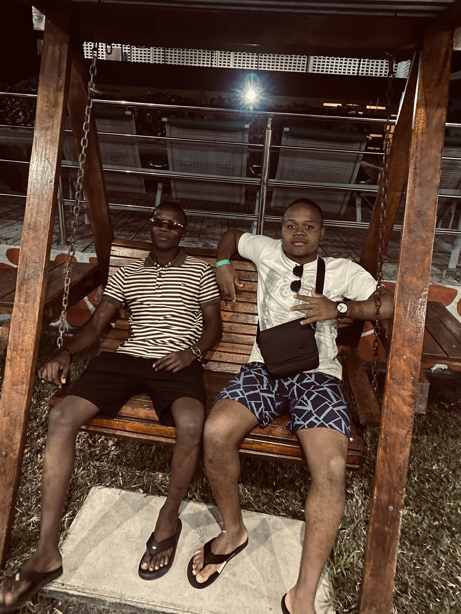
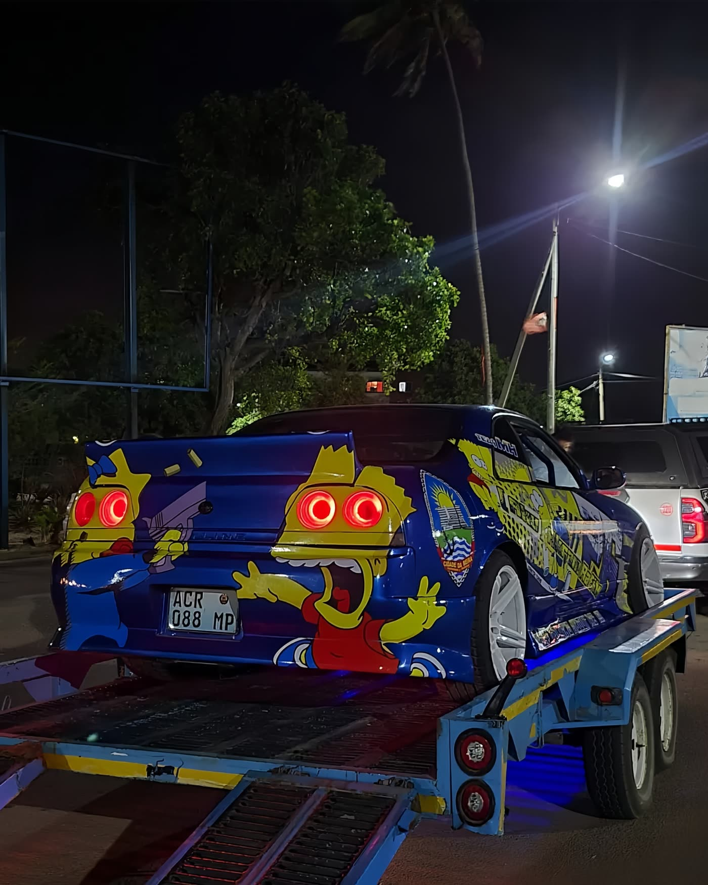
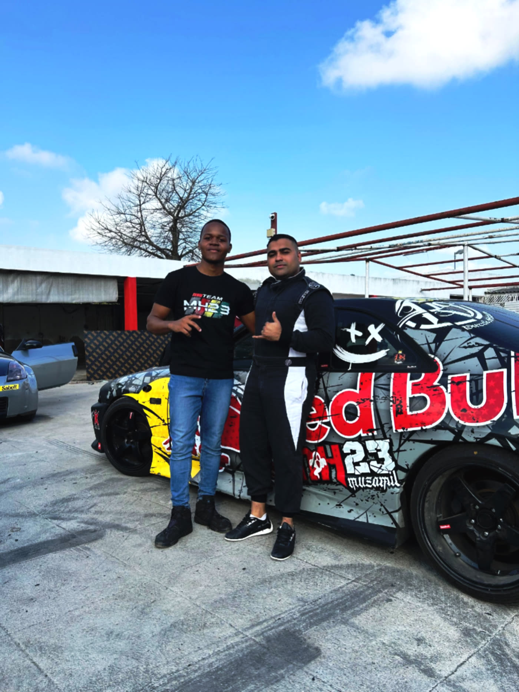
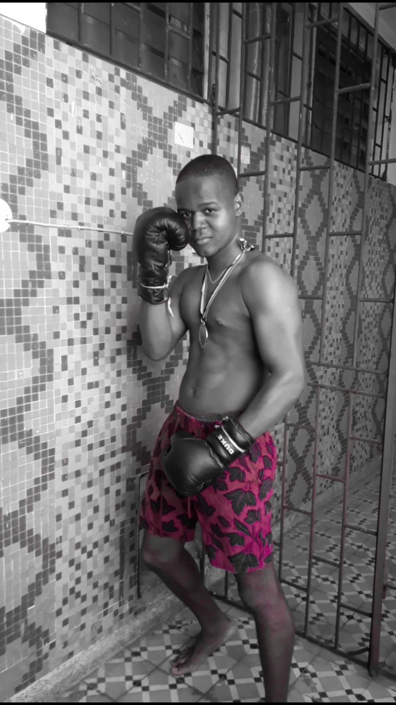
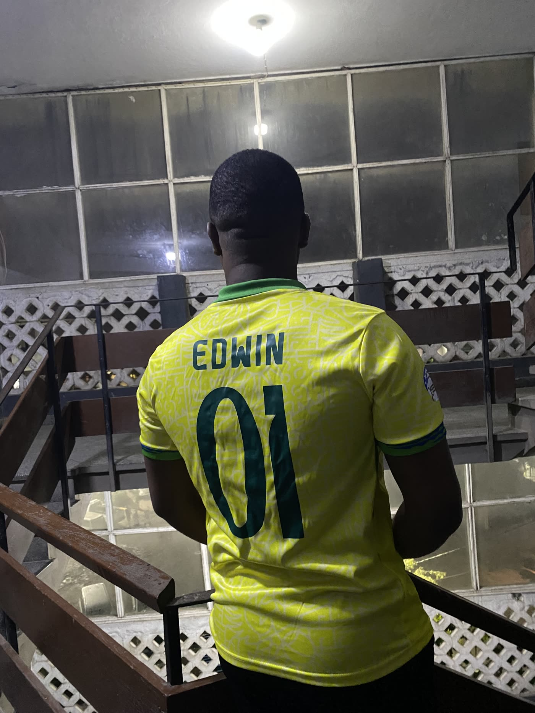

Sair com amigos
Adoro relaxar e passear com os meus amigos — bons momentos de conversa e descontração fazem parte da minha rotina.
Quando não estou a estudar, gosto de aproveitar o tempo livre com os amigos, viver o ambiente automóvel da Beira e manter-me ativo.

Adoro relaxar e passear com os meus amigos — bons momentos de conversa e descontração fazem parte da minha rotina.


Sou apaixonado pelo mundo automóvel — gosto de acompanhar e ajudar os meus amigos nos seus eventos e encontros de carros.

Treinar boxe ajuda-me a manter a disciplina e a energia em dia — é uma boa forma de aliviar o stress dos estudos.

Tambem gosto de dar pausas para refletir ate onde eu cheguei e onde eu vou, tanto de forma estoica como emocional, pois a vida e uma mistura de tudo.